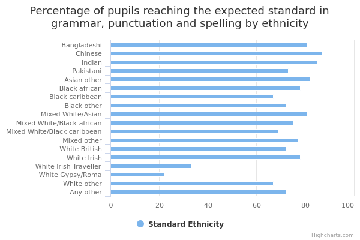
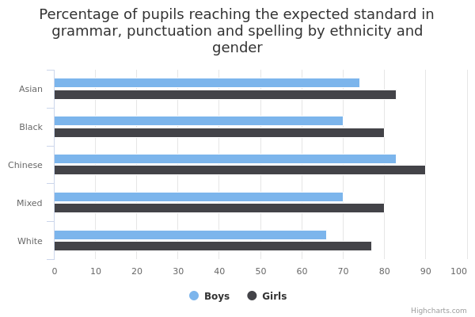

Grammar, punctuation and spelling attainment for children aged 7 to 11 (key stage 2)
The main facts and figures show that:
-
in 2015/16, there were 586,165 pupils in key stage 2 at state-funded mainstream schools in England, of which ethnicity was known for 581,286 (99%)
-
76% were White, 11% were Asian, 6% were Black, 5% were Mixed, 2% were from the Other ethnic group and 0.4% were Chinese
-
overall, 72% of pupils met the expected standard and 22% of pupils met the higher standard (making these figures the national averages)
-
Chinese and Indian pupils were most likely to meet both the expected and the higher standard
-
Traveller of Irish Heritage and Gypsy/Roma pupils were least likely to meet both the expected and the higher standard
-
78% of girls met the expected standard, compared to 68% of boys
-
Chinese boys and girls had the highest average scaled score, at 107 and 109 respectively
-
Gypsy/Roma boys and girls had the lowest average scaled score, at 94 and 96 respectively
Things you need to know
The Department for Education (DfE) has excluded, or ‘suppressed’, very small numbers (for example, values of 1 or 2, a percentage based on 1 or 2 pupils who achieved, or 0, 1 or 2 pupils who did not achieve a particular level).
This is because, where the size of the ethnic group population is small enough that an individual’s identity could be revealed, information is suppressed to preserve confidentiality. This is consistent with DfE’s statistical policy statement on confidentiality .
Pupil numbers for key stage 2 vary between measures of attainment for different subjects. This is because pupils who don't have a valid test result for a particular subject are excluded from the total. For more about valid test results, see Methodology.
What the data measures
This data measures the grammar, punctuation and spelling attainment of children in key stage 2 (years 3 to 6, when pupils are aged between 7 and 11).
The data covers the academic year 2015/16 (September 2015 to July 2016).
Key stage 2 test results range from 80 to 120 on a ‘scaled score’. (A ‘scaled score’ allows for variations in test difficulty year on year by standardising each pupil’s test results. This allows a clearer comparison between years.)
The standards for this measure, which combines grammar, punctuation and spelling, are divided in 2 categories:
-
expected standard
-
higher standard
To reach the expected standard, pupils must have achieved a scaled score of 100 or more in their key stage 2 grammar, punctuation and spelling tests.
To reach the higher standard, pupils must have achieved a score of 110 or more in their key stage 2 grammar, punctuation and spelling tests.
Why these ethnic categories were chosen
This data uses categories from the Department for Education’s school census, which is broadly based on the 2001 national census, with two exceptions:
- Traveller of Irish Heritage and Gypsy/Roma children have been separated into two categories
- Sri Lankan has been added to the Asian/Asian British group but is not reported separately
- Chinese pupils have been assigned a separate category
These changes were made after consultations with local authorities and lobby groups.
The categories in the school census are as follows:
White:
- White British
- White Irish
- Traveller of Irish Heritage
- Gypsy/Roma
- Other White
Mixed/Multiple ethnic groups:
- White and Black Caribbean
- White and Black African
- White and Asian
- Other Mixed background
Asian/Asian British:
- Indian
- Pakistani
- Bangladeshi
- Sri Lankan
- Other Asian background
Black/African/Caribbean/Black British:
- Black African
- Black Caribbean
-
Other Black background
-
Chinese
-
Other ethnic group
Information about grammar, punctuation and spelling standards is provided for both detailed and broad ethnic groups where possible and when the data is available.
The 6 broad categories used are as follows:
- White
- Mixed/Multiple ethnic groups
- Asian/Asian British
- Black/African/Caribbean/Black British
- Other ethnic group
- Chinese
However, local authority data is only provided for 5 broad ethnic groups. Information about the specific ethnic categories is excluded to preserve confidentiality and ensure individuals cannot be identified. Information about the Other ethnic group is not given because DfE does not publish data for this group at the local authority level.
The 5 broad categories are as follows:
- White
- Mixed/Multiple ethnic groups
- Asian/Asian British
- Black/African/Caribbean/Black British
- Chinese
Grammar, punctuation and spelling attainment for children aged 7 to 11 by ethnicity

View the numbers in a table
Average scaled score and percentage of pupils reaching the expected and higher standards in grammar, punctuation and spelling by ethnicity
| Asian | 79 | 30 | 106 |
|---|---|---|---|
| Bangladeshi | 81 | 30 | 106 |
| Chinese | 87 | 46 | 108 |
| Indian | 85 | 39 | 107 |
| Pakistani | 73 | 22 | 104 |
| Asian other | 82 | 37 | 107 |
| Black | 75 | 24 | 105 |
| Black african | 78 | 27 | 105 |
| Black caribbean | 67 | 16 | 103 |
| Black other | 72 | 21 | 104 |
| Mixed | 75 | 25 | 105 |
| Mixed White/Asian | 81 | 32 | 106 |
| Mixed White/Black african | 75 | 25 | 104 |
| Mixed White/Black caribbean | 69 | 18 | 103 |
| Mixed other | 77 | 27 | 105 |
| White | 71 | 21 | 104 |
| White British | 72 | 21 | 104 |
| White Irish | 78 | 31 | 105 |
| White Irish Traveller | 33 | 4 | 97 |
| White Gypsy/Roma | 22 | 2 | 95 |
| White other | 67 | 22 | 103 |
| Any other | 72 | 25 | 105 |
| Unknown | 60 | 18 | 103 |
| All | 72 | 22 | 104 |
Summary
The data shows that:
-
of White British pupils, 72% met the expected standard and 21% met the higher standard
-
of the broad ethnic categories, Asian, Mixed and Black pupils all did better than the national average for the expected standard, which is 72%
-
Chinese and Indian pupils were most likely to meet the expected standard, at 87% and 85% respectively
-
Traveller of Irish Heritage and Gypsy/Roma pupils were least likely to meet the expected standard, at 33% and 22% respectively
-
Chinese and Indian pupils were most likely to meet the higher standard, at 46% and 39% respectively
-
Traveller of Irish Heritage and Gypsy/Roma pupils were least likely to meet the higher standard, at 4% and 2% respectively
Download image and data
Grammar, punctuation and spelling attainment by ethnicity and area

Percentage of pupils meeting the expected standard in grammar, punctuation and spelling by ethnicity and area
| White | Mixed | Asian | Black | Chinese | All | |
| Barking and Dagenham | 69 | 74 | 90 | 84 | 0 | 78 |
|---|---|---|---|---|---|---|
| Barnet | 82 | 77 | 85 | 75 | 0 | 80 |
| Barnsley | 72 | 77 | 0 | 80 | 0 | 72 |
| Bath and North East Somerset | 72 | 73 | 89 | 71 | 0 | 73 |
| Bedford | 66 | 72 | 71 | 70 | 100 | 68 |
| Bexley | 73 | 77 | 91 | 86 | 0 | 78 |
| Birmingham | 69 | 73 | 74 | 71 | 92 | 71 |
| Blackburn with Darwen | 70 | 82 | 78 | 83 | 0 | 74 |
| Blackpool | 68 | 72 | 90 | 0 | 0 | 69 |
| Bolton | 74 | 74 | 83 | 72 | 100 | 76 |
| Bournemouth | 74 | 79 | 85 | 0 | 0 | 75 |
| Bracknell Forest | 61 | 70 | 79 | 73 | 0 | 64 |
| Bradford | 66 | 69 | 73 | 76 | 50 | 69 |
| Brent | 75 | 81 | 81 | 74 | 0 | 77 |
| Brighton and Hove | 75 | 77 | 76 | 70 | 100 | 75 |
| Bristol, City of | 72 | 69 | 76 | 65 | 69 | 72 |
| Bromley | 79 | 87 | 91 | 85 | 0 | 81 |
| Buckinghamshire | 77 | 78 | 79 | 68 | 100 | 77 |
| Bury | 74 | 76 | 76 | 63 | 0 | 74 |
| Calderdale | 68 | 77 | 72 | 74 | 0 | 69 |
| Cambridgeshire | 69 | 77 | 85 | 67 | 71 | 70 |
| Camden | 80 | 77 | 83 | 75 | 0 | 79 |
| Central Bedfordshire | 67 | 74 | 74 | 72 | 73 | 68 |
| Cheshire East | 75 | 75 | 94 | 0 | 0 | 76 |
| Cheshire West and Chester | 73 | 79 | 78 | 69 | 0 | 73 |
| City of London | 100 | 0 | 100 | 0 | 0 | 0 |
| Cornwall | 68 | 70 | 64 | 0 | 0 | 68 |
| County Durham | 76 | 80 | 88 | 0 | 81 | 76 |
| Coventry | 71 | 73 | 82 | 76 | 0 | 74 |
| Croydon | 73 | 76 | 84 | 72 | 100 | 75 |
| Cumbria | 70 | 85 | 78 | 0 | 79 | 70 |
| Darlington | 74 | 86 | 82 | 0 | 0 | 75 |
| Derby | 66 | 71 | 76 | 80 | 100 | 69 |
| Derbyshire | 72 | 75 | 78 | 0 | 86 | 72 |
| Devon | 71 | 78 | 80 | 61 | 0 | 71 |
| Doncaster | 65 | 76 | 70 | 87 | 75 | 65 |
| Dorset | 67 | 75 | 76 | 0 | 100 | 67 |
| Dudley | 68 | 73 | 77 | 69 | 63 | 69 |
| Ealing | 77 | 78 | 80 | 75 | 100 | 78 |
| East Riding of Yorkshire | 71 | 74 | 100 | 0 | 0 | 71 |
| East Sussex | 67 | 72 | 81 | 64 | 47 | 67 |
| Enfield | 73 | 77 | 88 | 75 | 100 | 75 |
| Essex | 73 | 78 | 87 | 83 | 93 | 74 |
| Gateshead | 78 | 79 | 77 | 80 | 0 | 78 |
| Gloucestershire | 72 | 80 | 84 | 78 | 82 | 73 |
| Greenwich | 70 | 80 | 86 | 83 | 0 | 78 |
| Hackney | 80 | 81 | 79 | 74 | 100 | 77 |
| Halton | 70 | 76 | 0 | 0 | 0 | 70 |
| Hammersmith and Fulham | 81 | 82 | 88 | 83 | 0 | 82 |
| Hampshire | 74 | 77 | 85 | 80 | 84 | 74 |
| Haringey | 78 | 81 | 80 | 71 | 71 | 76 |
| Harrow | 78 | 82 | 88 | 73 | 0 | 82 |
| Hartlepool | 74 | 0 | 85 | 0 | 0 | 74 |
| Havering | 78 | 79 | 90 | 84 | 0 | 80 |
| Herefordshire, County of | 74 | 77 | 100 | 0 | 0 | 74 |
| Hertfordshire | 76 | 78 | 86 | 77 | 90 | 77 |
| Hillingdon | 75 | 81 | 86 | 80 | 0 | 80 |
| Hounslow | 74 | 76 | 86 | 79 | 100 | 80 |
| Isle of Wight | 64 | 69 | 56 | 0 | 0 | 64 |
| Isles of Scilly | 60 | 0 | 0 | 0 | 0 | 60 |
| Islington | 77 | 77 | 86 | 78 | 0 | 77 |
| Kensington and Chelsea | 87 | 84 | 92 | 86 | 0 | 87 |
| Kent | 71 | 82 | 88 | 84 | 93 | 73 |
| Kingston upon Hull, City of | 70 | 74 | 91 | 70 | 0 | 70 |
| Kingston upon Thames | 79 | 77 | 85 | 71 | 0 | 80 |
| Kirklees | 69 | 65 | 72 | 65 | 0 | 69 |
| Knowsley | 69 | 85 | 86 | 0 | 0 | 70 |
| Lambeth | 79 | 80 | 93 | 78 | 0 | 79 |
| Lancashire | 73 | 77 | 74 | 65 | 82 | 73 |
| Leeds | 70 | 72 | 73 | 66 | 88 | 70 |
| Leicester | 64 | 72 | 79 | 75 | 0 | 72 |
| Leicestershire | 71 | 73 | 83 | 70 | 86 | 72 |
| Lewisham | 74 | 74 | 86 | 73 | 0 | 75 |
| Lincolnshire | 71 | 74 | 89 | 67 | 100 | 71 |
| Liverpool | 67 | 67 | 80 | 69 | 84 | 68 |
| Luton | 69 | 69 | 72 | 76 | 100 | 71 |
| Manchester | 70 | 72 | 77 | 78 | 81 | 73 |
| Medway | 64 | 70 | 85 | 90 | 0 | 67 |
| Merton | 75 | 66 | 86 | 78 | 100 | 78 |
| Middlesbrough | 68 | 75 | 76 | 0 | 0 | 70 |
| Milton Keynes | 72 | 74 | 89 | 81 | 100 | 75 |
| Newcastle upon Tyne | 72 | 69 | 81 | 72 | 0 | 73 |
| Newham | 73 | 79 | 86 | 80 | 57 | 82 |
| Norfolk | 66 | 71 | 83 | 65 | 80 | 66 |
| North East Lincolnshire | 71 | 79 | 69 | 0 | 0 | 71 |
| North Lincolnshire | 69 | 76 | 84 | 45 | 100 | 70 |
| North Somerset | 73 | 72 | 80 | 57 | 0 | 73 |
| North Tyneside | 74 | 76 | 76 | 64 | 100 | 74 |
| North Yorkshire | 68 | 83 | 83 | 55 | 0 | 68 |
| Northamptonshire | 69 | 70 | 82 | 76 | 0 | 70 |
| Northumberland | 70 | 63 | 78 | 0 | 0 | 70 |
| Nottingham | 68 | 68 | 76 | 75 | 100 | 70 |
| Nottinghamshire | 72 | 77 | 81 | 68 | 0 | 73 |
| Oldham | 72 | 72 | 73 | 78 | 0 | 72 |
| Oxfordshire | 72 | 69 | 70 | 68 | 0 | 72 |
| Peterborough | 63 | 65 | 71 | 68 | 0 | 65 |
| Plymouth | 71 | 77 | 79 | 80 | 100 | 72 |
| Poole | 73 | 71 | 86 | 0 | 0 | 73 |
| Portsmouth | 68 | 73 | 86 | 72 | 0 | 70 |
| Reading | 72 | 72 | 82 | 73 | 0 | 74 |
| Redbridge | 69 | 75 | 83 | 73 | 100 | 78 |
| Redcar and Cleveland | 78 | 79 | 0 | 0 | 0 | 77 |
| Richmond upon Thames | 84 | 88 | 92 | 81 | 100 | 85 |
| Rochdale | 75 | 70 | 73 | 75 | 100 | 74 |
| Rotherham | 70 | 71 | 77 | 74 | 100 | 71 |
| Rutland | 75 | 67 | 0 | 0 | 0 | 75 |
| Salford | 77 | 82 | 85 | 76 | 100 | 77 |
| Sandwell | 70 | 75 | 80 | 72 | 100 | 73 |
| Sefton | 77 | 91 | 78 | 67 | 0 | 78 |
| Sheffield | 69 | 70 | 76 | 71 | 0 | 70 |
| Shropshire | 69 | 72 | 75 | 0 | 0 | 69 |
| Slough | 67 | 77 | 84 | 72 | 0 | 77 |
| Solihull | 77 | 76 | 85 | 77 | 0 | 77 |
| Somerset | 71 | 82 | 87 | 67 | 0 | 71 |
| South Gloucestershire | 73 | 74 | 84 | 72 | 0 | 73 |
| South Tyneside | 74 | 83 | 86 | 100 | 0 | 75 |
| Southampton | 70 | 77 | 76 | 92 | 0 | 72 |
| Southend-on-Sea | 73 | 76 | 74 | 74 | 73 | 73 |
| Southwark | 75 | 71 | 90 | 76 | 0 | 76 |
| St. Helens | 75 | 77 | 85 | 0 | 57 | 75 |
| Staffordshire | 72 | 69 | 77 | 75 | 89 | 72 |
| Stockport | 77 | 81 | 80 | 70 | 0 | 77 |
| Stockton-on-Tees | 75 | 81 | 80 | 83 | 0 | 76 |
| Stoke-on-Trent | 66 | 64 | 75 | 66 | 0 | 67 |
| Suffolk | 67 | 72 | 82 | 78 | 57 | 68 |
| Sunderland | 75 | 75 | 88 | 69 | 0 | 75 |
| Surrey | 76 | 82 | 83 | 72 | 92 | 77 |
| Sutton | 76 | 80 | 93 | 81 | 100 | 80 |
| Swindon | 71 | 76 | 79 | 87 | 0 | 73 |
| Tameside | 73 | 80 | 83 | 75 | 0 | 74 |
| Telford and Wrekin | 77 | 78 | 77 | 76 | 0 | 77 |
| Thurrock | 68 | 73 | 81 | 85 | 100 | 72 |
| Torbay | 71 | 74 | 0 | 0 | 0 | 72 |
| Tower Hamlets | 74 | 77 | 84 | 78 | 100 | 82 |
| Trafford | 82 | 86 | 86 | 87 | 100 | 84 |
| Wakefield | 68 | 77 | 71 | 69 | 79 | 69 |
| Walsall | 67 | 74 | 76 | 76 | 100 | 70 |
| Waltham Forest | 71 | 76 | 81 | 75 | 76 | 75 |
| Wandsworth | 81 | 75 | 80 | 73 | 73 | 78 |
| Warrington | 76 | 83 | 82 | 45 | 100 | 76 |
| Warwickshire | 74 | 73 | 88 | 69 | 0 | 75 |
| West Berkshire | 71 | 75 | 82 | 79 | 0 | 72 |
| West Sussex | 67 | 71 | 76 | 68 | 71 | 68 |
| Westminster | 80 | 84 | 84 | 80 | 100 | 80 |
| Wigan | 75 | 69 | 76 | 71 | 100 | 75 |
| Wiltshire | 70 | 72 | 80 | 61 | 0 | 71 |
| Windsor and Maidenhead | 74 | 76 | 73 | 73 | 0 | 74 |
| Wirral | 69 | 75 | 84 | 0 | 0 | 70 |
| Wokingham | 81 | 78 | 92 | 84 | 0 | 82 |
| Wolverhampton | 71 | 70 | 82 | 77 | 0 | 74 |
| Worcestershire | 66 | 72 | 78 | 67 | 40 | 67 |
| York | 69 | 84 | 83 | 0 | 0 | 70 |
Summary
The data shows that:
-
the highest achieving local authority was Kensington and Chelsea in London, where 87% of pupils met the expected standard
-
the lowest performing local authority overall was the Isles of Scilly, where 60% of pupils met the expected standard – however, because there is only one school of 20 pupils on the Isles of Scilly, this result should be treated with caution
-
White pupils were most likely to meet the expected standard in the City of London – however, because there is only one school of 28 pupils in this area, this result should be treated with caution
-
White pupils were least likely to achieve the expected standard in Bracknell Forest in the South East
-
Asian pupils were most likely to meet the expected standard in the East Riding of Yorkshire in Yorkshire and the Humber, and in Herefordshire in the West Midlands; they were least likely to meet the expected standard on the Isle of Wight in the South East
-
Black pupils were most likely to meet the expected standard in South Tyneside in the North East; they were least likely to meet the expected standard in Warrington in the North West, and in North Lincolnshire in Yorkshire and the Humber
-
100% of Chinese pupils met the expected standard in 33 local authorities: 11 of these were in London, 6 in the North West, and 3 in the East of England
-
Chinese pupils were least likely to meet the expected standard in Worcestershire in the West Midlands
-
pupils of a Mixed ethnic background were most likely to meet the expected standard in Sefton in the North West, and least likely to in Northumberland in the North East
Download image and data
Grammar, punctuation and spelling attainment by ethnicity and gender

View the numbers in a table
Average scaled score and the percentage of pupils reaching the expected and higher standards in grammar, punctuation and spelling by ethnicity and gender
| Boys | Girls | |||||
| Asian | 74 | 26 | 105 | 83 | 35 | 107 |
|---|---|---|---|---|---|---|
| Bangladeshi | 77 | 24 | 105 | 85 | 36 | 107 |
| Chinese | 83 | 43 | 107 | 90 | 50 | 109 |
| Indian | 81 | 35 | 106 | 89 | 45 | 108 |
| Pakistani | 68 | 18 | 103 | 78 | 27 | 105 |
| Asian other | 79 | 32 | 106 | 85 | 41 | 107 |
| Black | 70 | 20 | 104 | 80 | 28 | 105 |
| Black african | 74 | 23 | 104 | 83 | 31 | 106 |
| Black caribbean | 61 | 13 | 102 | 74 | 19 | 104 |
| Black other | 67 | 18 | 103 | 77 | 25 | 105 |
| Mixed | 70 | 21 | 104 | 80 | 30 | 106 |
| Mixed White/Asian | 76 | 27 | 105 | 85 | 37 | 107 |
| Mixed White/Black african | 70 | 21 | 104 | 79 | 29 | 105 |
| Mixed White/Black caribbean | 62 | 14 | 102 | 75 | 22 | 104 |
| Mixed other | 72 | 22 | 104 | 82 | 32 | 106 |
| White | 66 | 17 | 103 | 77 | 25 | 105 |
| White British | 67 | 17 | 103 | 77 | 25 | 105 |
| White Irish | 73 | 25 | 104 | 83 | 36 | 107 |
| White Irish Traveller | 26 | 2 | 96 | 40 | 7 | 99 |
| White Gypsy/Roma | 18 | 2 | 94 | 26 | 3 | 96 |
| White other | 63 | 18 | 103 | 71 | 25 | 104 |
| Any other | 67 | 22 | 104 | 77 | 28 | 105 |
| Unknown | 57 | 17 | 102 | 65 | 21 | 104 |
| All | 68 | 18 | 103 | 78 | 27 | 105 |
Summary
The data shows that:
-
overall, girls out-performed boys in grammar, punctuation and spelling
-
78% of girls met the expected standard, compared to 68% of boys
-
27% of girls met the higher standard, compared to 18% of boys
-
Chinese girls did best – 90% met the expected standard
-
Gypsy/Roma boys were least likely to meet the expected standard – 18% did so
-
the biggest attainment gap, at 14 percentage points, was found among Traveller of Irish Heritage pupils, where 40% of girls met the expected standard, compared to 26% of boys
-
the smallest attainment gap, at 1 percentage point, was found among Gypsy/Roma pupils, where 3% of girls met the higher standard, compared to 2% of boys
-
Chinese girls had the highest average scaled score (109) and Gypsy/Roma boys had the lowest average scaled score (94)
Download image and data
Methodology and data type
Purpose Of Data Source
The primary purpose is to measure schools’ and pupils’ progress and performance from key stage 1 to key stage 2, to monitor and improve standards, and to inform parental choice when applying to local schools.
Methodology
The key stage 2 datasets are compiled using information matched together from three data sources:
- prior attainment records (key stage 1 results)
- school census records
- qualification entries and results collected from awarding bodies
Key stage assessment data received from the Standard Testing Agency (STA) is combined with information on pupil's characteristics from the school census and prior attainment by the department's contractor.
Records are matched, using fields such as surname, forename, date of birth, UPN (unique pupil number), gender and postcode. This successfully matches around 60% to 70% of pupils.
Additional, more complex, routines are then applied to match as many of the remaining pupils as possible, up to around 98%. The coverage of the local authority (LA) and regional statistics is state-funded schools only in England.
The system of national curriculum levels is no longer used by the government to report on end of key stage assessment.
Because of the changes to the curriculum, figures for 2016 are not comparable to those for earlier years.
Any pupils who do not have a valid result for a subject are excluded from the calculations for that subject and do not appear in the number of eligible pupils or in the outcome percentages for that subject.
Valid results for the national test figures are: achieved the expected standard (AS), not achieved the expected standard (NS), special consideration (CA), absent (A), maladministration (Q), working below the standard of the test (B), or unable to access the test (T).
Data type
Linked Administrative Data
Type of statistic
National statistic
Suppression rules
Values of 1 or 2 or a percentage based on 1 or 2 pupils who achieved, or did not achieve, a particular standard are suppressed. Some additional figures may be suppressed to prevent the possibility of a suppressed figure being revealed. This suppression is consistent with DfE’s statistical policy on confidentiality.
Figures for the Isles of Scilly and City of London are suppressed in DfE’s key stage 2 provisional Statistical First Release as these local authorities (LAs) have a single school and DfE do not publish school level information in the performance tables at the time of the provisional release. These figures become unsuppressed in the revised release as school level figures are already published in the performance tables.
Regional eligible pupil figures are rounded to the nearest 10 so that it is not possible to derive figures for these LAs by summing the figures for the other LAs in the region.
In the school level data, any figures relating to a cohort of 5 pupils or fewer will be suppressed. This applies to sub-groups of pupils as well as the whole cohort, for example, if there were five boys and three girls in a school, DfE would not publish attainment for boys or girls separately but would publish attainment for all pupils as this is based on 8 pupils.
Disclosure control
The Code of Practice for Official Statistics requires the Department for Education (DfE) to take reasonable steps to ensure that their published or disseminated statistics protect confidentiality.
For more information about DfE’s disclosure control procedures for its statistical releases please see DfE’s statistical policy statement on confidentiality
Data source details
-
Department for Education
-
01/09/2016 (provisional)
-
12/01/2017 (revised)
-
Annual